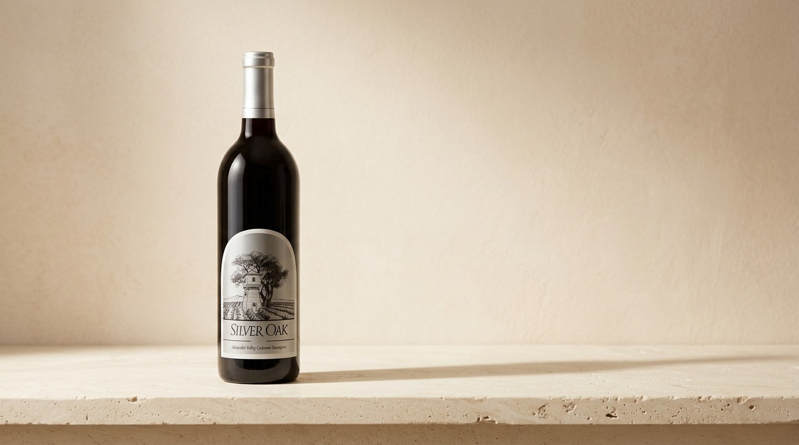
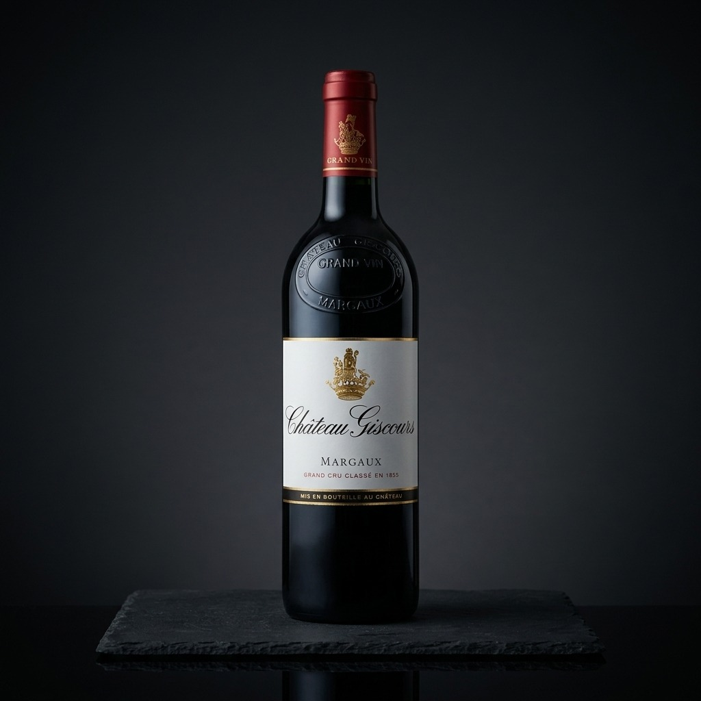
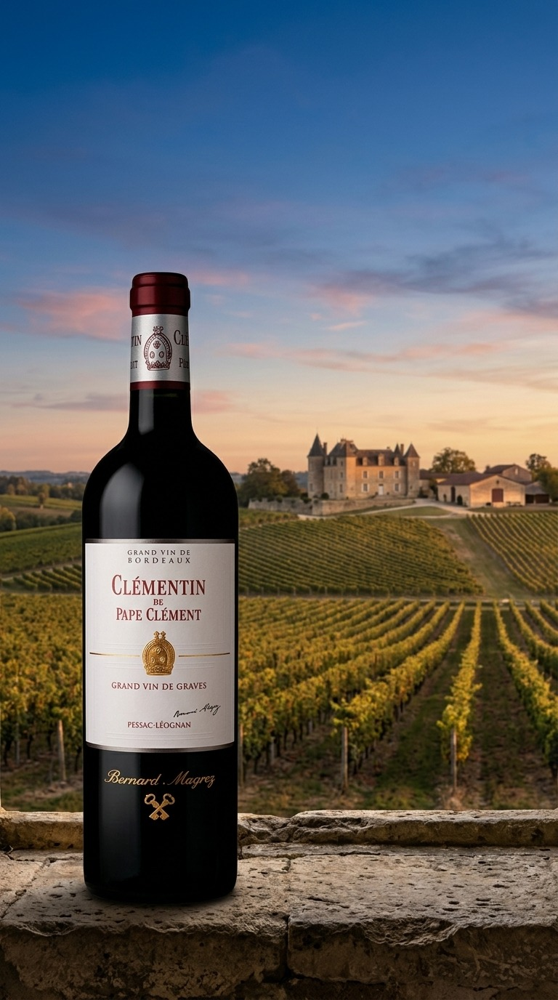
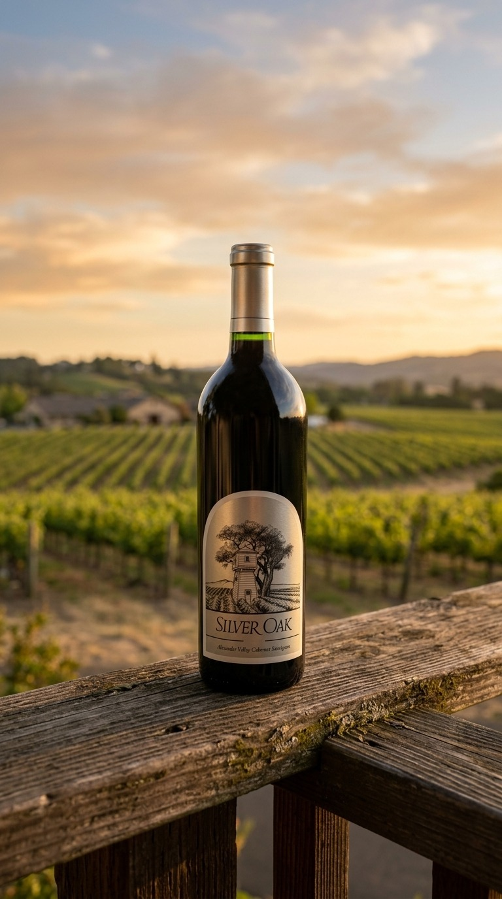
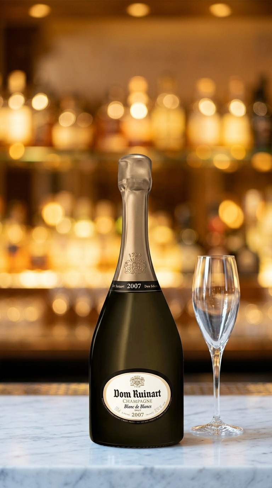

Real wines from mywineconnection.com. Stills: the store's own bottle photo placed into a scene by Google Gemini (gemini-3.1-flash-image). Video: Veo 3.1 (Google) and Kling 2.5 (via fal) animating approved stills. Motion graphic: Remotion code written by Claude and rendered locally. Copy by Claude, every string passed the compliance word check; numbers show characters used against each platform limit. Nothing has been published. Media cost for the whole page: about $1.50.
Check labels in every frame. AI-generated images and video must carry Meta's AI disclosure. Product photos appear to be Vivino-sourced (watermark); rights to use them in ads are unconfirmed.
Google Search
Silver Oak Alexander Valley 2022 (375ml) · Responsive search ad

Image asset, 16:9 · Gemini scene from the store photo
Harper's Rest Chardonnay 2024, in stock now at Yiannis Wine Shop for $54.99. 76/90
Shipped from our Virginia Beach cellar to eligible states. Adults 21+ only. 75/90
Audience: Keywords: "harpers rest chardonnay". Same Google age and location rules.
Google Shopping
Château Giscours 2022 magnum · Merchant Center product

lifestyle_image_link · Gemini studio sceneKling 2.5 via fal, 5s, from the still (for PMax / YouTube)
idShopify SKU in production
GISCOURS22-1500
title
Château Giscours Margaux Grand Cru Classé 2022 1.5L Magnum 58/150
description
Château Giscours 2022 from Margaux, a Grand Cru Classé of 1855, in the 1.5L magnum format. Stored in our Virginia Beach cellar and shipped direct to eligible states. 165/5000
Audience: Age 21+. Interests: Napa Valley, Cabernet Sauvignon, Wine collecting.
Story sequence · Stories (3 frames)

Frame 1 · Clémentin 2019

Frame 2 · Silver Oak 2022

Frame 3 · Dom Ruinart (do not run: vintage)
Primary text
Bordeaux, Sonoma and Champagne, all shipped from our own cellar. 64/125
Headline
Three regions, one cellar 25/40
Call to action
Shop now
Website URL
https://mywineconnection.com/
Audience: Age 21+. Interests: Bordeaux wine, Napa and Sonoma wine, Champagne.
Wine-Searcher
No ad creative. Wine-Searcher sells a sponsored listing: a flat monthly fee that lifts the shop's existing listings (about 11,800 products) above free merchants on every wine page where it stocks the bottle. Serious buyers price-check here, so the lever is price rank, which our daily brief tracks per SKU. Alternative: Sponsored Lead at $0.75 per click. Setup happens in Wine-Searcher's Business Manager; there is no API.
Audience: people searching the exact wine; no age or location targeting.
Targeting settings by channel
Ship-to states are a working list, not verified against Yianni's licences. No ad serves until he confirms them.
Setting
Google Search + Shopping
Meta (Facebook/Instagram)
Wine-Searcher
Age
Exclude 18-24 (Google has no 21+ bracket)
Minimum age 21, set as a hard control
None
Locations
VA, CA, FL, CT, LA, NE, ND, NH, OR, WV, WY, DC; presence only
VA, CA, FL, CT, LA, NE, ND, NH, OR, WV, WY, DC; home location only
Not targetable
Audiences
No remarketing, customer lists or lookalikes (banned for alcohol); affinity and in-market allowed
Pixel retargeting allowed; interests for prospecting; Advantage+ audience off at first